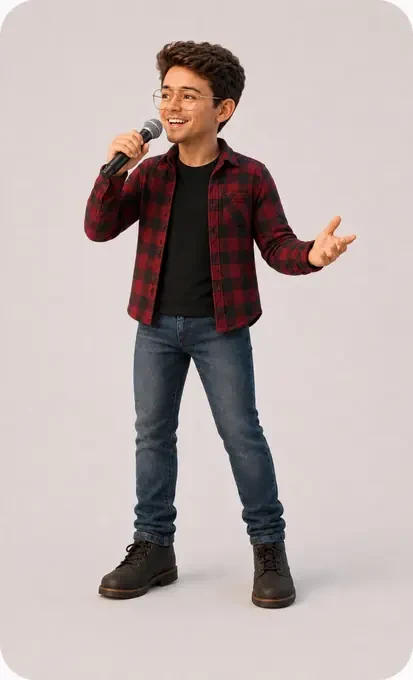

← All projects
Live music booking and human-reviewed workflow
Rooftop Ramblers
A booking system that gathers scattered venue facts while keeping fit and outreach decisions human.

The situation
Booking a band involves repeated research that still needs human judgment.
Venue websites, Instagram profiles, booking emails, location details, genres, capacity, and past outreach often live in different places. The system gathers the facts, but Andrew decides whether the venue is a real fit and whether outreach should be sent.
Websites, social profiles, booking contacts, location, genre, and prior outreach.
Likely venues are checked, missing details are flagged, and useful facts are placed together.
Nothing is sent automatically. The final choice remains human.
Ready to pitch, waiting for reply, follow-up date, and next action stay visible.

Result